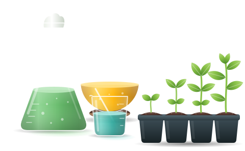

Біологія клітини
Будова та функції клітини, органели, мембрани, клітинний цикл.
Фундаментальна кафедра зі столітньою історією та світовим визнанням. Тут зібрано наочні приклади, моделі та матеріали для дистанційних лабораторних робіт з дисциплін, що викладає кафедра.

Кафедра фізіології, біохімії рослин та біоенергетики — фундаментальна кафедра Національного університету біоресурсів і природокористування України зі столітньою історією та світовим визнанням. Вона входить до складу факультету захисту рослин, біотехнологій та екології.
Кафедра забезпечує фундаментальну біологічну підготовку майбутніх біотехнологів, агрономів та фахівців із захисту рослин: від будови й функцій клітини, обміну речовин і енергії до сигнальних систем рослин та статистичної обробки біологічних даних.
На кафедрі відкрито унікальну спеціалізацію «Фітобіотехнологія».
Для цих курсів у розділі «Моделювання» поступово з’являтимуться інтерактивні моделі та наочні приклади для дистанційних лабораторних робіт.
Будова та функції клітини, органели, мембрани, клітинний цикл.
Фотосинтез, дихання, водний режим, мінеральне живлення, ріст і розвиток рослин.
Інтегрований курс фізіологічних та біохімічних процесів рослинного організму.
Білки, ферменти, вуглеводи, ліпіди, нуклеїнові кислоти та обмін речовин.
Перетворення енергії в клітині: дихальний ланцюг, фотофосфорилювання, синтез АТФ.
Рецептори, вторинні посередники та каскади передачі сигналу в клітині.
Мембранний транспорт і сигнальні мережі, що регулюють життєдіяльність рослин.
Статистичні методи аналізу біологічних і біотехнологічних даних.
Планування експерименту, вибірки, розподіли та достовірність результатів.
Біотехнологічні основи вирощування грибів і водоростей.
Мікроорганізми, клітини та тканини рослин як об’єкти біотехнології.
Знайомство з професією біотехнолога, освітньою програмою та кафедрою.
Кафедра готує фахівців за спеціальностями бакалаврського та магістерського рівнів.
Освітньо-професійна програма «Біотехнології та біоінженерія». Спеціалізація кафедри — «Фітобіотехнологія».
Бакалавр · МагістрФундаментальна підготовка з фізіології та біохімії рослин для майбутніх агрономів.
Бакалавр · МагістрФізіологічні основи стійкості рослин та їхньої взаємодії з чинниками середовища.
Бакалавр · МагістрНатисніть «Біографія та здобутки», щоб переглянути освіту, стажування та наукові результати викладача.
В.о. завідувача кафедри
Доктор біологічних наук, професор
Рослинно-мікробні взаємодії, біоконтроль фітопатогенних бактерій, PGPB-біопрепарати.
Доцент, заступник голови профбюро факультету
Доктор біологічних наук, доцент
Взаємодія Basidiomycetes з патогенами і вірусами, експрес-діагностика, біопрепарати для АПК.
Доцент, голова Ради молодих вчених факультету
Кандидат сільськогосподарських наук, доцент
Посухостійкість деревних і с.-г. рослин, білки стресу, PLFA-аналіз мікробіому, екобіотехнології води.
Доцент
Кандидат біологічних наук, доцент
Біохімія дії важких металів, вуглецеві наноматеріали (фулерен C60) та аквапорини за водного стресу.
Доцент; завідувач Лабораторії наукових фондових колекцій Інституту зоології ім. І. І. Шмальгаузена НАН України
Кандидат біологічних наук, доцент
Стійкість рослин до ентомофітофагів, біорізноманіття Diptera: Sciaridae, ШІ-моніторинг (Febris), ДНК-баркодинг.
Доцент, заступник декана факультету з виховної роботи
Кандидат сільськогосподарських наук, доцент
Фітовірусологія, молекулярна та ІФА-діагностика вірусів лікарських і зернових культур, фітоімунітет.
Інтерактивні моделі та наочні приклади для виконання лабораторних робіт онлайн. Розділ наповнюється.
Збудники поширених хвороб сільськогосподарських рослин: гіфи й спори грибів, бактерії, віруси — з описом хвороби та посиланням на джерело.
Національний університет біоресурсів і природокористування України